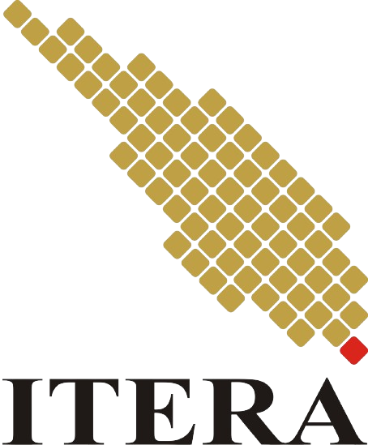

TANAMAN OBAT KELUARGA

Kingdom : Plantae
Divisi : Magnoliophyta
Kelas : Lilieropsida
Ordo : Asparagales
Famili : Asphodelaceae
Genus : Aloe
Spesies : Aloe vera.
Mengobati luka bakar
Menjaga kesehatan mulut
Menjaga kesehatan pencernaan
Meredakan gastroesophageal reflux disease (GERD)
Mengobati sariawan